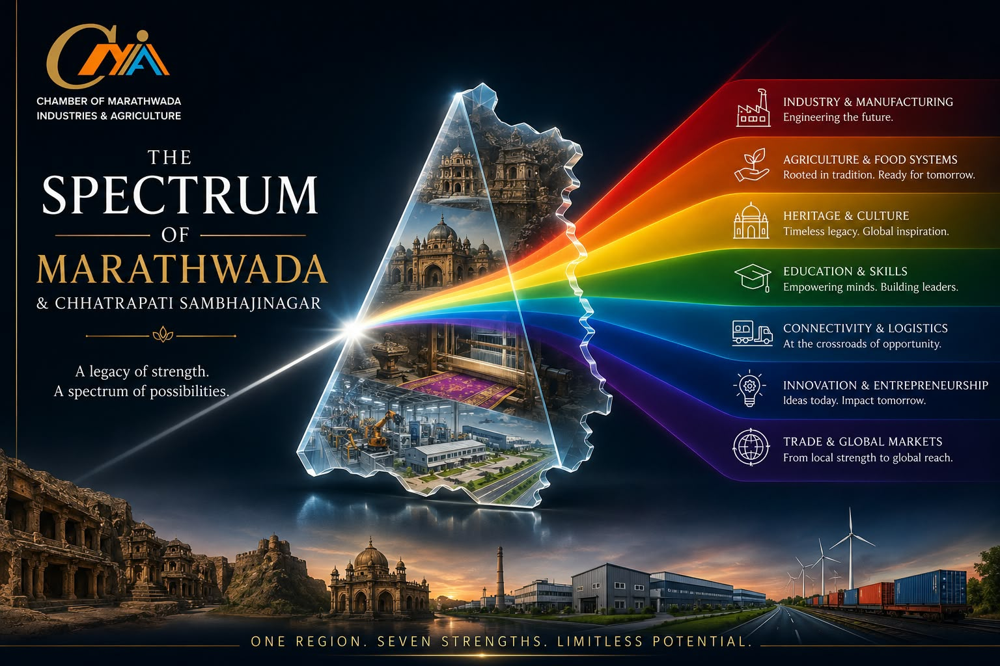

Auto, auto-component & pharma manufacturing, anchored by AURIC.

Chamber of Marathwada Industries & Agriculture
A legacy of strength. A spectrum of possibilities.
Auto, auto-component & pharma manufacturing, anchored by AURIC.
Cotton, soybean & sugarcane, with strong agri-export infrastructure.
Ajanta, Ellora & Daulatabad Fort — living Deccan heritage.
Anchored by Dr. Ambedkar Marathwada University & a growing skilling ecosystem.
Linked by an international airport, expressways & the DMIC corridor.
A rising startup & MSME ecosystem, backed by AURIC and R&D partnerships.
Exporting auto parts, textiles & agri-produce to global markets.